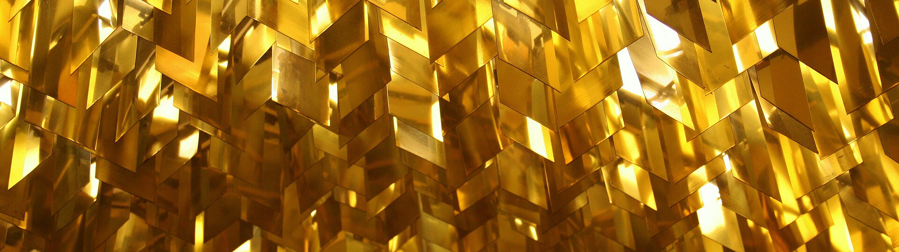
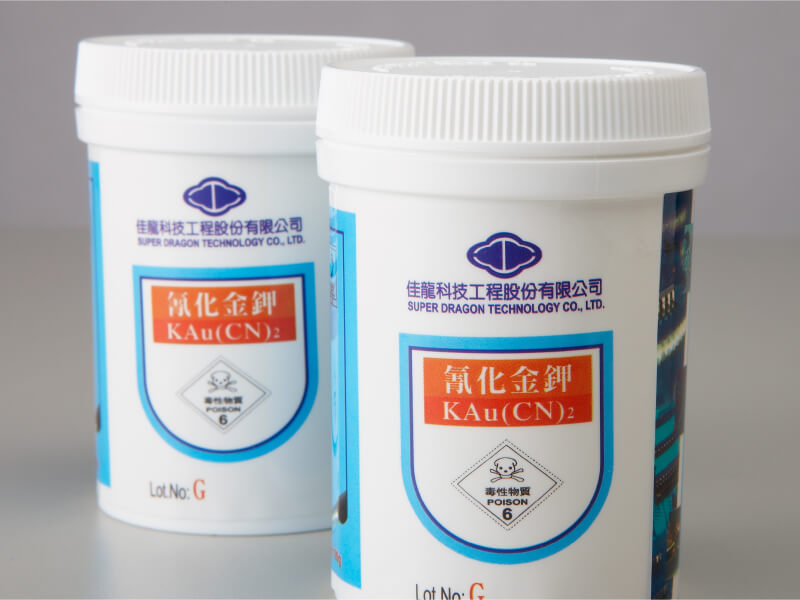
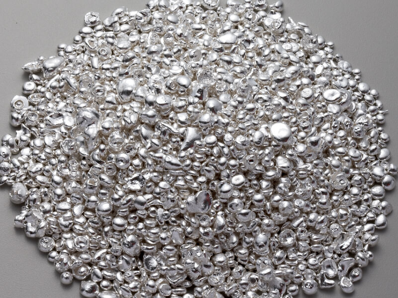
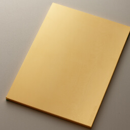
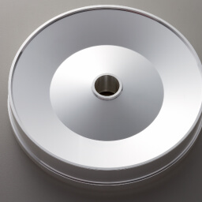
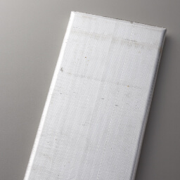
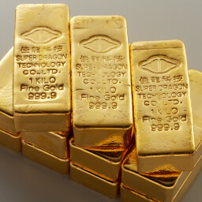

Manufacturing and Sales of
Semiconductor Application Materials
KAu (CN)2 Production
Potassium dicyanoaurate, KAu(CN)₂—commonly known as Gold Salt—is the primary material used in gold electroplating.
It has the following physical properties: soluble in water, slightly soluble in alcohol, insoluble in ether, hygroscopic, and highly toxic.
It is mainly used as a gold plating material for printed circuit boards (PCBs), connector wires, lead frames, and various electronic components used in telecommunications, military, and scientific instruments. It can also be used for decorative gold plating, electroless gold deposition, and as an analytical reagent.
Chialong’s gold salts are produced using advanced equipment and stringent quality control, achieving world-class purity and consistency.

Product Features
1. High Purity and Low Impurities — Manufactured from 99.99% pure gold bullion to ensure exceptional purity and minimal contamination.
2. Controlled Particle Size Selection — Uniform Dissolution and Enhanced Product Stability
3. Excellent Stability — Clear and Colorless Powder Form
Specifications
1. Gold Content: 68.30 ±0.05%
2. Packaging: 100 g or 40 g per container (customizable upon request)
Hazard Warnings
1. Dust or mist may irritate the nose, throat, and eyes.
2. Potassium cyanide may form hydrogen cyanide gas when exposed to moisture, which can cause mild poisoning.
3. Ingestion is highly toxic and may cause nausea and vomiting.
Safety and Protective Measures
1. Avoid inhaling dust or mist; wear appropriate protective masks and safety goggles when necessary.
2. Store in a dry, well-ventilated area to prevent moisture exposure and the formation of hydrogen cyanide gas.
3. In case of accidental contact or ingestion, seek immediate medical attention and provide the relevant safety data sheet (SDS) to medical personnel.
Target Material Manufacturing
The SDTI team focuses on the development of environmentally friendly technologies and extends its expertise into the production of application materials required in the vacuum systems industry.
Since July 2005, SDTI has been engaged in the research, development, manufacturing, and sales of PVD (Physical Vapor Deposition) sputtering targets used in thin-film vacuum systems, continuously building competitive advantages to maximize shareholder value.
We are committed to the R&D and manufacturing of thin-film sputtering materials, producing target materials tailored to specific industrial requirements. For clients with specialized process needs, SDTI analyzes and improves physical deposition characteristics through continuous innovation and technical diversification, maintaining team vitality and enhancing organizational competitiveness.





Quality Assurance
All sputtering targets produced by SDTI meet the quality standards required for various industrial manufacturing processes, ensuring precision, reliability, and consistent performance in every application.
- High-Purity Metal Sputtering Targets
- Highly Stable Metallurgical and Physical Properties
- Target Material Processing
- Customized Target Fabrication
Specifications
Industries Served
Optical Disc Industry Target Materials
Optical Disc Industry Target Materials
Silver Targets
Specifications
ARQ-920
ARQ-930
M2-98
Stella 100
Smart
Customized per Customer Requirements
Customized per Customer Requirements
Grain Size
10~20µm
10~20µm
10~20µm
Purity
4N and above (99.99% or higher purity)
4N and above (99.99% or higher purity)
4N and above (99.99% or higher purity)
Applications
CD-R
CD-RW
DVD-RAM
DVD-R
DVD-RW/+R
RF
MEMS
LD
LED lead frame connector